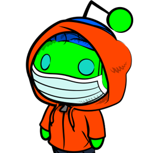

Get notified of new messages
Turn on desktop notifications
{{elem.message[elem.message.length - 1].text.slice(0, 35)}}
...
{{textEmpty}}
{{elem.message[elem.message.length - 1].hour.slice(0, 5)}}
{{hourEmpty}}
{{activeContact.name}}
{{elem}}
{{msg.hour.slice(0, 5)}}
{{elem}}
{{msg.hour.slice(0, 5)}}
Keep your phone connected
CREATED by JUMBOTRON ♥